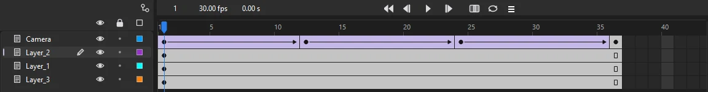

Animation
Timeline and layers
The timeline lays out your animation in two directions: layers stacked from top to bottom, and frames running from left to right.

Reading the timeline

Along the top is the header. On its left are three readouts: the current frame, the document's frame rate, and the elapsed time at the playhead in seconds. They are for reading only; set the frame rate as FPS on the Doc tab of the Properties panel or in (Ctrl+J). In the middle are the playback buttons, which do what the menu does:
| Button | Key | Does |
|---|---|---|
| First frame | Shift+, | Goes to frame 1 (Shift+. goes to the last) |
| Step back, step forward | , and . | Moves the playhead one frame |
| Play | Enter | Plays from the playhead, with sound; again stops |
| Onion skin | Alt+Shift+O | Shows the frames around the playhead faded; right-click it for its settings |
| Loop playback | Alt+Shift+L | Plays a range over and over |
| ☰ | — | The frame view menu |
Alt+. and Alt+, jump to the next and previous keyframe on the current layer. The keys work while the stage or the timeline has the focus, so Enter in a text box stays the text box's.
Below the header, the ruler numbers the frames, and the playhead marks the frame shown on the stage. Click or drag in the ruler to move the playhead. While onion skinning or loop playback is on, its markers in the ruler can be dragged too (see Onion skinning and Looping a range). Past the end of the timeline the grid is shaded darker.
Each row of the frame grid belongs to the layer beside it. The cells show what is on each frame:
| You see | It means |
|---|---|
| Filled dot | A keyframe with content |
| Hollow dot | An empty (blank) keyframe |
| Gray frames | The keyframe's content held over time, ending in a small hollow rectangle |
| White frames | Empty frames |
| Lilac span with an arrow | A classic tween |
| Green span with an arrow | A shape tween |
| Blue span with diamonds | A motion tween; each diamond is a property keyframe |
| Yellow-green span | An armature pose span (see Bones) |
| Red flag, green slashes or gold anchor | A frame label, comment or anchor, followed by its text where there is room |
| Small a over the dot | A keyframe with a frame script |
| Waveform | A sound playing over those frames |
Layers
Layers keep parts of your scene separate, so you can draw and animate each one without disturbing the rest. Layers higher in the list draw in front.
Kinds of layer
| Kind | Make it with | What it does |
|---|---|---|
| Normal | The New Layer button, | Holds artwork, instances, text, sounds and frame scripts |
| Folder | The New Folder button, | Groups layers; holds no frames of its own |
| Mask and masked | Right-click › Mask | The layers under a mask show only through its artwork. See Masks |
| Guide and guided | Right-click › Guide | Never exported. With layers guided by it, a line on it is a motion guide they follow |
| Camera | Pans, zooms and turns the view of the scene. See The camera | |
| Peg | A layer that others follow, to move, turn and scale them about a pivot. See Pegs | |
| Color art | Takes a drawing's fills under its lines. See Line and color art | |
| Effect | A tone, highlight or glow over the layer below. See Effect layers | |
| Adjustment and track matte | Right-click › Adjustment Layer, Track Matte | Changes everything below, or shows a layer through the one above. See Track mattes and adjustment layers |
There is no separate sound layer: a sound sits on a keyframe of any layer, though a layer of its own keeps it easy to find. See Sound.
The layers inside a folder, under a mask or under a guide are indented beneath it in the list. Adjustment layers and track-matted layers have an icon of their own; the other kinds share the plain layer icon, so a name such as mask or guide helps you tell them apart.
Layer controls
Each layer row has, from left to right:
- Name
- Double-click to rename. Click to make it the current layer. Small colored badges at the end of the name show the effects the layer has on: motion blur, echo or posterize time, a layer mode, a mask's edge, an effect layer, and a node graph Layer node taking the layer. Hover over one for what it does; click the echo, mask edge or effect badge to change its settings. Where there is little room they overlap, and hovering lists them all.
- Pencil
- Marks the current layer, where new artwork goes.
- Eye
- Shows or hides the layer on the stage. Hidden layers show a red cross.
- Lock
- Protects the layer from changes.
- Color square
- Click to view the layer's artwork as outlines in that color. The color is also used for the layer's selection highlights.
The eye, lock and square buttons at the top of the list apply to every layer at once. In the rows:
- Alt-click an eye, lock or square to do the same to every other layer: hide all the others, say, and Alt-click again to bring them back.
- Drag down a column to set each layer you pass the same way, hiding or locking several in one stroke.
- Shift-click an eye to make the layer transparent: it shows faded, so you can see what is under it while you work. A faded eye marks it; Shift-click again for the layer in full. Exports always draw it in full. Layer Properties sets how faded it is.
Add, delete and reorder
- The buttons below the layer list add a new layer or a new folder, and delete the layers selected. and add them too.
- Ctrl-click or Shift-click layer names to select several layers at once.
- Drag a layer up or down to change the stacking order. Drop it onto a folder to move it inside.
- Right-click a layer for Insert Layer, Insert Folder, Delete Layer, the layer clipboard commands below, Guide, Mask, Track Matte, Adjustment Layer, Layer Mode, Echo and Posterize Time..., Motion Blur, Parent Layer, Show All, Hide Others, Lock Others and Properties.... A mask layer adds Mask Edge..., a masked one Also Masked By, and an effect layer Effect Settings....
- A timeline always keeps at least one layer that can hold frames, so the last one cannot be deleted.
Copy, paste and duplicate layers
Right-click a layer, or use , for Cut Layers, Copy Layers, Paste Layers and Duplicate Layers. They act on the layers selected, with everything inside a folder, mask or guide among them, and keep every frame and setting. Pasted layers go in above the current layer; a duplicate goes above the original, named with copy. Copied layers paste into the document they came from. When a parent and the layers that follow it are copied together, the copies follow the copied parent.
Folders
Folders group layers, for example all the parts of one character. Click the arrow beside a folder to open or close it; a closed folder hides its layers' rows in the frame grid too. Hiding or locking a folder hides or locks everything inside it.
Layer properties
Right-click a layer and choose Properties... to set several things at once:

- Name, Show and Lock
- The same as the controls in the layer row.
- Type
- Normal, Guide, Guided, Mask, Masked or Folder; a layer can't become a folder, nor a folder a layer. See Masks and guides.
- Outline color
- The layer's color for outlines and highlights.
- View layer as outlines
- Draws the layer's artwork as outlines.
- Transparent
- Shows the layer faded while you edit, at the percentage you set (5 to 95%).
- Follow parent's
- For a layer that follows a parent layer, whether it takes on the parent's Scale, Skew and Flip. See Layer parenting.
Layer parenting
A layer can follow another layer's artwork, the way a forearm follows the upper arm: move, turn or scale the parent and the child goes with it.
To make a layer follow another, right-click it and choose the layer from Parent Layer (or None to set it free), or use the parenting view: click the linked-circles button at the top right of the layer list and a column of handles appears, with a line from each layer to the one it follows, in that layer's color. Drag a layer's handle onto another layer to make it follow that one, or let go below the layers so it follows none. The objects stay where they are on the stage. A layer can't follow a folder, a guide layer, or one that already follows it. Hover over a layer's name to see which layer it follows. For multiplane camera moves, see Rigs and motion.
A child always follows its parent's position and rotation. By default it takes on the parent's scale, skew and flip too; turn any of them off under Follow parent's in Layer Properties and the child keeps its own. With Scale off, a parent grown to twice its size carries the child along without growing it, and the child's distance from the parent's pivot stays as drawn. With Flip off, a parent mirrored side to side leaves the child unmirrored; a parent flipped top to bottom is a side-to-side flip turned half round, so the child still turns with it. The settings go with the child layer and apply through the whole chain above it. Changing them can move the child on the stage, and Undo puts it back.
Parenting that comes in an FLA file made elsewhere works as it was made there: a child turns with its parent and stays on its joint, but keeps its own size, and is not mirrored when the parent is. Follow parent's applies to parents set up in Phoenix.
Frame view
The ☰ button in the header, beside the loop button, sets how the frames look:
- Tiny to Large
- How wide each frame is. Narrow frames fit a long scene on screen; wide ones are easier to click. Ctrl+scroll over the frames zooms in and out.
- Short, Normal and Tall Rows
- How tall each layer's row is. The layer list keeps in step.
- Preview
- Shows each keyframe's artwork as a thumbnail along its span, cropped to the art.
- Preview in Context
- Shows the whole stage at each keyframe, so you can see where the art sits.
- Time in Seconds
- Marks the ruler in seconds instead of frame numbers.
- Span Based Selection
- A click selects the whole span between keyframes instead of one frame, ready to drag as a block. Shift-click still extends the selection.
Phoenix remembers the frame view between sessions.
Other views of the timeline
The menu has panels that show the same layers another way:
- X-Sheet
- Each layer's exposures frame by frame, typed in by drawing number. See X-sheet.
- Function Curves
- Any property of the current layer as a curve over time. See Function curves.
- Layer Depth
- How far each layer sits from the multiplane camera. See Multiplane camera.
- Scene
- The document's scenes, each with its own timeline. See Scenes.
Once a scene has a camera, the Frame tab of the Properties panel also shows the current layer's Layer Depth, how far behind the stage it sits, beside the Layer Depth panel.
Many timelines
A document has more than one timeline. Each scene has its own, and so does every symbol. The Timeline panel shows the one you are working in, and the edit bar above the stage says which: Scene 1, or Scene 1 › hat while you edit the symbol hat from that scene.
- Switch scenes from , the Scene panel, or Shift+Page Up and Shift+Page Down.
- Open a symbol's timeline by editing the symbol. Click a name in the edit bar to go back up.
- Each open document has timelines of its own; switching document tabs switches the Timeline panel with it.
Timelines nest: a scene holds instances of symbols, whose timelines hold more. A graphic's timeline plays in step with the timeline it is placed on, frame for frame, under the control of its looping settings, so scrubbing the scene scrubs it too. A movie clip's timeline runs on its own, from its first frame, whatever the outer timeline does; the stage shows its first frame while you scrub. A button's timeline is its four states.
Find things on the timeline
In a long scene with many layers:
- Alt+. and Alt+, step from keyframe to keyframe on the current layer.
- Close folders you are not working in, choose Tiny frames from the frame view menu, or Ctrl+scroll, to see more of the timeline at once. Preview shows each keyframe's artwork in its row.
- Movie Explorer (Alt+F3) lists every layer, labeled frame, script and sound, in every scene and symbol. Its Frames button narrows it to layers and labels, and clicking an entry takes you there.
- Find and Replace (Ctrl+F) finds every keyframe that plays a sound, and every instance of a symbol, with the scene, layer and frame of each.
- The Actions panel's script navigator lists every script in the document.
- Ctrl+Alt+A selects every frame of the timeline, ready to move or copy.
The timeline in scripts
Timelines can be driven from two kinds of script:
- ActionScript in a movie. A script on a keyframe runs when the playhead reaches it, and calls such as
stop(),gotoAndPlay("walk")andnextScene()move a timeline's playhead, the scene's or a named movie clip's. Frame labels make good targets, as they stay put when frames move. These run in Test Movie and published movies, and the simple ones while you play the document too, with Enable Simple Frame Actions on. See Frame scripts and ActionScript and Test Movie. - JSFL or Python scripts that edit the document.
fl.getDocumentDOM().getTimeline()is the timeline you are working in, with its layers and frames: insert keyframes, add layers, set the current frame. See Scripting.